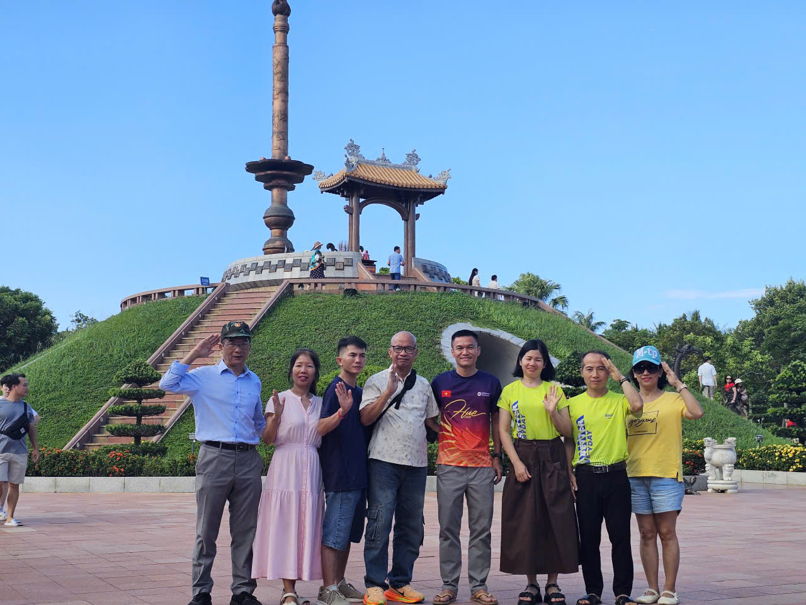
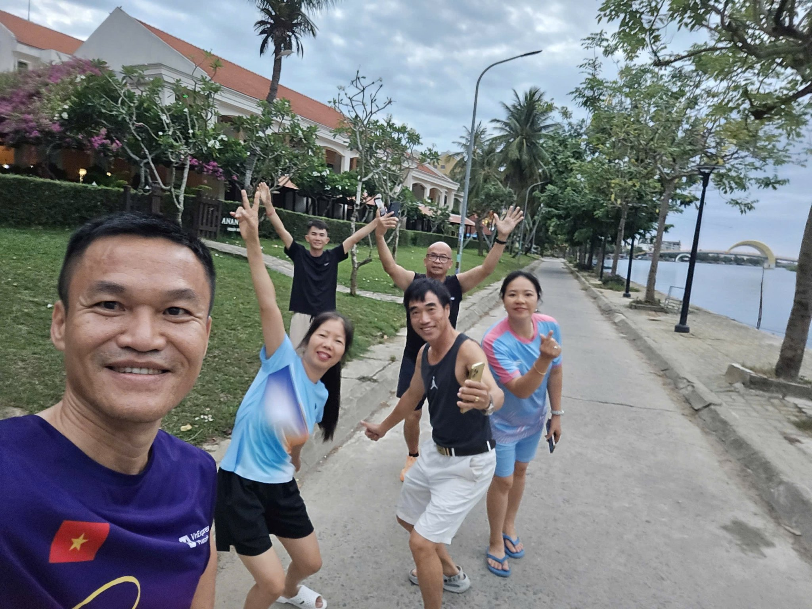
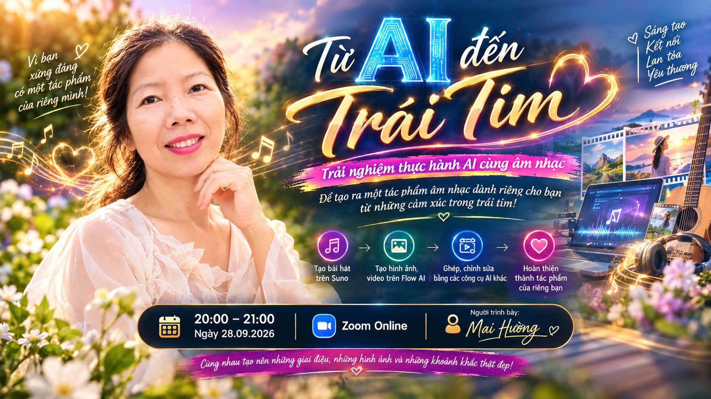

Chào bạn, tôi là Mai Hường.
Từ thuở ấu thơ, tôi là một cô bé mang trong mình tình yêu mãnh liệt với những con số và Toán học. Đến năm lớp 12, ngã rẽ cuộc đời đã định hướng tôi thi vào khối ngành Kinh tế. Thế nhưng, tận sâu thẳm trong trái tim, niềm đam mê thực sự của tôi luôn hướng về Công nghệ Thông tin.
Suốt 20 năm ròng rã, tôi đứng trên bục giảng, cống hiến thanh xuân để giảng dạy về khối ngành kinh tế. Tôi yêu nghề giáo, yêu bục giảng, nhưng "ngọn lửa" công nghệ vẫn luôn âm ỉ cháy, chờ đợi một ngày được thắp sáng.
(Cuộn xuống để tiếp tục hành trình)
Và rồi, bước ngoặt đến vào năm 2025 khi tôi tình cờ chạm ngõ Trí tuệ Nhân tạo (AI). Ngọn lửa đam mê, sự khao khát tưởng chừng như đã ngủ quên bỗng chốc bùng lên rực rỡ. Tôi quyết định dấn thân vào học AI.
Hành trình bắt đầu từ lớp Super AI của người thầy tuyệt vời - Thầy Trần Khánh Tứ. Chìm đắm trong niềm hạnh phúc của việc học, chỉ sau một thời gian ngắn, tôi tiếp tục bứt phá và nâng cấp lên lớp CMA của Thầy. Thế giới AI đã mở ra cho tôi những chân trời mà tôi chưa từng nghĩ mình có thể chạm tới.
Vũ trụ đã ưu ái gửi đến tôi không chỉ kiến thức công nghệ, mà còn là sự thức tỉnh về nhân sinh quan. Trong thời gian đó, tôi vinh dự được học hỏi từ Thầy Tuấn Tử Tế Từ Tâm qua các lớp phát triển bản thân sâu sắc: Kiến Xây Đời Mới, Đời Mới XAI và Kiến Tạo Cuộc Sống XAI.


Thông qua việc học AI, tôi không chỉ làm chủ công cụ, mà còn được mài giũa về Thân - Tâm - Trí. Tôi rèn luyện tính kỷ luật, trở thành một Mai Hường năng động hơn, khỏe mạnh hơn và tự tin hơn. Quan trọng nhất, tôi biết quay về bên trong để hiểu mình, hiểu người, và để thốt lên rằng: "Cuộc sống này thật đáng sống biết bao!"
Nhờ những người thầy tuyệt vời và một cộng đồng gắn kết, tôi đã tự tin bước ra ánh sáng để chia sẻ những điều mình biết. Tôi giao tiếp với AI, viết nên những bản nhạc từ chính câu chuyện cuộc đời mình, chuyển hóa những bài học sâu sắc của Thầy thành những ca khúc chữa lành, và biến những tình huống thực tế thành các video truyền cảm hứng sống động.

Dưới đây là một số thước phim, bản nhạc và thành quả mà tôi đã tự tay thực hiện thông qua công nghệ AI (Tạo video Suno, video tự động). Xin gửi gắm đến bạn một nguồn năng lượng tích cực nhất!
Tôi đã vượt qua những rào cản của tuổi tác và định kiến chuyên môn để tự tin chia sẻ về cách làm